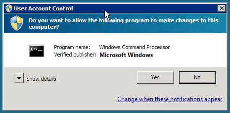
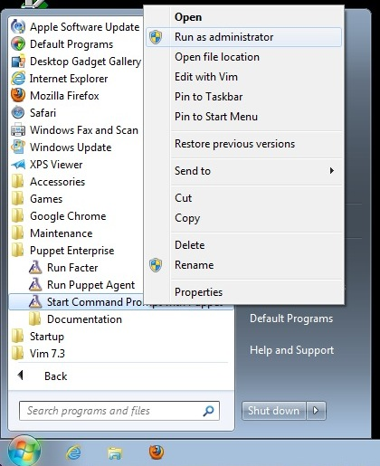

Running Puppet on Windows
This documentation applies to Puppet versions ≥ 2.7.6 and Puppet Enterprise ≥ 2.5. Earlier versions may behave differently.
If you only plan to run puppet agent on its normal schedule, no further action is necessary — after installing Puppet on Windows, the puppet agent service will run every 30 minutes.
Continue reading for information about running Puppet tasks manually, configuring Puppet, and the context in which Puppet runs on Windows.
Running Puppet Tasks
Finding the Puppet Tools
The Puppet installer creates a “Puppet Enterprise” or “Puppet” folder in the Start menu. Any Start menu items referenced below can be found in this folder.
Fetching Configurations from a Puppet Master
After installation, Puppet on Windows will regularly fetch configurations from a puppet master with no further configuration needed. Every 30 minutes, the puppet agent service will contact the puppet master that was specified during installation, and will fetch and apply a configuration.
Note: just like with any *nix Puppet node, you must sign the node’s certificate request on the puppet master before it can fetch configurations. Use
puppet cert listto view outstanding certificate requests, andpuppet cert sign <NAME>to approve them.
Manually Triggering a Puppet Agent Run
You can trigger a puppet agent run at any time with the “Run Puppet Agent” Start menu item. This will show the status of the run in a command prompt window.
Triggering an agent run requires elevated privileges, and must be performed as an administrator. On Windows 7 or 2008, using this Start menu item will automatically ask for User Account Control confirmation:

Configuring the Agent Service
By default, the puppet agent service starts automatically at boot, runs every 30 minutes, and contacts the puppet master specified during installation.
Note: When puppet is running as a daemonized Windows service, the
listen = trueconfiguration directive or command line argument does not apply. Consequently, it is not possible to use the deprecated puppet kick run mode. Instead, consider using Marionette Collective.
- To start, stop, or disable the service, use the Service Control Manager, which can be launched by choosing “Run…” from the Start menu and typing
Services.msc. -
You can also use the
sc.execommand to manage the puppet agent service. To prevent the service from starting on boot:C:\>sc config puppet start= demand [SC] ChangeServiceConfig SUCCESSTo restart the service:
C:\>sc stop puppet && sc start puppetTo change the arguments used when triggering a puppet agent run (this example changes the level of detail that gets written to Puppet’s logs):
C:\>sc start puppet --test --debug - To change how often the agent runs, change the
runintervalsetting in puppet.conf. - To change which puppet master the agent contacts, change the
serversetting in puppet.conf.
Note: You must restart the puppet agent service after making any changes to Puppet’s config file. Restart the service using the Services control panel item.
Running Other Puppet Tasks
To perform any task other than triggering an agent run, use the “Start Command Prompt with Puppet” Start menu item. This shortcut starts a command prompt window with its environment pre-set to enable the Puppet tools.
For nearly all purposes, you must start this command window with elevated privileges:
- On Windows 2003, make sure you are logged in as an administrator before starting the Puppet command prompt.
-
On Windows 7 or 2008, you must right-click the start menu item and choose “Run as administrator:”

This will ask for UAC confirmation:
Applying Manifests Locally
The puppet apply subcommand accepts a puppet manifest file, and immediately compiles and applies a configuration from it:
C:\> puppet apply my_manifest.pp
This allows you to manage nodes with Puppet without a central puppet master server, by having every node manage its own configuration.
To use puppet apply, you must first use the “Start Command Prompt with Puppet” item in the Start menu. This will open a command prompt window in which puppet apply commands can be issued. Remember to start this command prompt with elevated privileges.
To use puppet apply effectively, you should distribute your Puppet modules to each agent node and copy them into the modulepath. This allows the small manifests written for puppet apply to easily assign pre-existing classes to the node.
Note: The default
modulepathon Windows is<data directory>\etc\modules.
Note: When using a multi-directory modulepath, remember to separate the directories with
;, rather than:.
To learn more about using modules, see Module Fundamentals or Learning Puppet.
Interactively Modifying Puppet Resources
The puppet resource subcommand can interactively view and modify a system’s state using Puppet’s resource types. (For example, it can be used as an alternate interface for creating or modifying user accounts.)
To run puppet resource, you must use the “Start Command Prompt with Puppet” item in the Start menu. This will open a command prompt window in which puppet resource commands can be issued. Remember to start this command prompt with elevated privileges.
The standard format of a puppet resource command is:
C:\> puppet resource <TYPE> <NAME> <ATTRIBUTE=VALUE> <ATTRIBUTE=VALUE>
Specifying attribute=value pairs will modify the resource, leaving them off will print the resource’s current state. Leaving out the resource name will list every resource of the specified type.
- The resources
puppet resourcecan use are the same as those available for Windows manifests. See Writing Manifests for Windows for more details. - See the
puppet resourceman page for more details about the puppet resource subcommand.
Running Facter
When writing manifests for Windows nodes, it can be helpful to see a test system’s actual fact data. Use the “Run Facter” Start menu item to do this.
Configuring Puppet
Puppet’s main puppet.conf configuration file can be found at <data directory>\etc\puppet.conf.
- See Configuring Puppet for more details about Puppet’s main config file. (Puppet’s secondary config files are not used on Windows.)
- See the configuration reference for a complete list of
puppet.confsettings. - In a command window opened with the “Start Command Prompt with Puppet” Start menu item, you can use
puppet --configprint <SETTING>to see the current value of any setting.
Note: You must restart the puppet agent service after making any changes to Puppet’s config file. Restart the service using the Services control panel item.
Important Windows Concepts for Unix Admins
Windows differs from *nix systems in many ways, several of which affect how Puppet works.
Security Context
On Unix, puppet is either running as root or not. On Windows, this maps to running with elevated privileges or not.
Puppet agent typically runs as a service under the LocalSystem account, and thus always has elevated privileges. When running puppet from the command line or from a script or scheduled task, you should be aware of User Account Control (UAC) restrictions that may cause Puppet to run without elevated privileges.
If Puppet is accidentally run in a non-elevated security context, it will use a different data directory (specifically, the .puppet directory in the current user’s home directory) and will try to request a second SSL certificate. Since the puppet master does not allow duplicate certificates, running puppet agent in a non-elevated security context will usually cause it to fail.
- On systems without UAC (i.e. Windows 2003), users in the local Administrators group will typically run all commands with elevated privileges.
- On systems with UAC (i.e. Windows 7 and 2008), you must explicitly elevate privileges, even when running as a member of the local Administrators group. Puppet’s “Run Puppet Agent” Start menu item automatically requests privilege elevation when run, but the “Start Command Prompt with Puppet” item must be manually started with elevated privileges by right-clicking it and choosing “Run as administrator.”
File System Redirection in 64-bit Windows Versions
The Puppet agent process runs as a 32-bit process. When run on 64-bit versions of Windows, there are some issues to be aware of.
-
The File System Redirector will silently redirect all file system access to
%windir%\system32to%windir%\SysWOW64instead. This can be an issue when trying to manage files in the system directory, e.g., IIS configuration files. In order to prevent redirection, you can use thesysnativealias, e.g.C:\Windows\sysnative\inetsrv\config\application Host.config.Note: 64-bit Windows Server 2003 requires hotfix KB942589 to use the sysnative alias.
-
The Registry Redirector performs a similar function with certain registry keys .